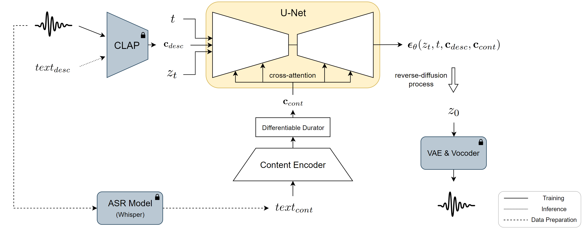

VoiceLDM: Text-to-Speech with Environmental Context
Abstract
This paper presents VoiceLDM, a model designed to produce audio that accurately follows two distinct natural language text prompts: the description prompt and the content prompt. The former provides information about the overall environmental context of the audio, while the latter conveys the linguistic content. To achieve this, we adopt a text-to-audio (TTA) model based on latent diffusion models and extend its functionality to incorporate an additional content prompt as a conditional input. By utilizing pretrained contrastive language-audio pretraining (CLAP) and Whisper, VoiceLDM is trained on large amounts of real-world audio without manual annotations or transcriptions. Additionally, we employ dual classifier-free guidance to further enhance the controllability of VoiceLDM. Experimental results demonstrate that VoiceLDM is capable of generating plausible audio that aligns well with both input conditions, even surpassing the speech intelligibility of the ground truth audio on the AudioCaps test set. Furthermore, we explore the text-to-speech (TTS) and zero-shot text-to-audio capabilities of VoiceLDM and show that it achieves competitive results.

Figure 1: Overview of VoiceLDM. VoiceLDM is trained with large amounts of real-world audio data. $text_{cont}$ is generated during data preparation by processing the audio with Whisper, an automatic speech recognition (ASR) model. $text_{desc}$ is only used during inference. Modules with a lock icon indicates that it is frozen during training.
Text-to-Speech with Environmental Control
|
Description: She is talking in a park. Content: Good morning! How are you feeling today? |
Description: A girl talking at the beach. Content: Good morning! How are you feeling today? |
Description: Girl singing for a soothing country music Content: Good morning! How are you feeling today? |
|
Description: A man is speaking under the water. Content: This audio is generated by a text to speech model. |
Description: A man is speaking in a cathedral. Content: This audio is generated by a text to speech model. |
Description: Silent whispering voices. Content: This audio is generated by a text to speech model. |
|
Description: A man talking in a lively cafe with music in the background. Content: Let's see how you did tonight. What do you got in there? |
Description: A train running on a railroad track and a man talking Content: Let's see how you did tonight. What do you got in there? |
Description: Dark hero angrily speaking in the dark. Content: Let's see how you did tonight. What do you got in there? |
|
Description: Raining heavily with thunder while person is speaking. Content: It's raining heavily today. |
Description: Old man is speaking sadly. Content: It's raining heavily today. |
Description: Reporter delivering weather news accompanied by background music Content: It's raining heavily today. |
Text-to-Speech
"clean speech for an audiobook" is given as the description prompt.
| Content: I generate audio with two different types of natural language text prompts: a description prompt, and a content prompt. | Content: A three-way confrontation on a high-rise balcony ends in Chucky's and Moke's deaths. | Content: The president Ernest Bai Koroma appointed Umu Hawa Tejan Jalloh as his successor. |
| Content: I am an A.I. that can generate various audio containing speech! | Content: If you tell me why you came here, I'll show you the project I've been working on. | Content: Eight National Paralympic Committee quotas and three individual athlete quotas were secured. |
(Zero-Shot) Text-to-Audio
| Description: Birds chirping. | Description: A violin playing a heartfelt melody. | Description: A crowd of people shout and give applause |
Derivation of Dual Classifier-Free Guidance
Given two conditions $c_1$, $c_2$, let $p_{\theta}(z_t|c_1, c_2)$ be the density of the conditional distribution of $z_t$, which is estimated by a score prediction network $\theta$. When applying classifier-free guidance for two conditions, the conditional distribution of $p_{\theta}$ is modified with additional guidance with strength $w$ as follows: \begin{equation} \overset{\sim}{p}_{\theta}(z_t | c_1, c_2) \propto p_{\theta}(z_t | c_1, c_2)p_{\theta}(c_1, c_2 | z_t)^w \end{equation} For the case of VoiceLDM, it is reasonable to assume that the two conditions $c_1$ and $c_2$ are independent. In this case, the conditional distribution is modified as follows: \begin{equation} \overset{\sim}{p}_{\theta}(z_t | c_1, c_2) \propto p_{\theta}(z_t | c_1, c_2)p_{\theta}(c_1 | z_t)^w p_{\theta}(c_2 | z_t)^w \end{equation} One may also consider the possibility of using different guidance strengths for each condition, where we denote the individual guidance strengths as $w_1$ and $w_2$: \begin{equation} \overset{\sim}{p}_{\theta}(z_t | c_1, c_2) \propto p_{\theta}(z_t | c_1, c_2)p_{\theta}(c_1 | z_t)^{w_1} p_{\theta}(c_2 | z_t)^{w_2} \end{equation} From this we get the gradient of the log-density of the modified conditional distribution as \begin{align} & \nabla_{z_t}\log \overset{\sim}{p}_{\theta}(z_t|c_1, c_2) \nonumber \\ & = \nabla_{z_t}\log p_{\theta}(z_t|c_1, c_2)p_{\theta}(c_1 | z_t)^{w_1} p_{\theta}(c_2 | z_t)^{w_2} \nonumber \\ & = \nabla_{z_t}\log p_{\theta}(z_t|c_1, c_2) \biggl(\frac{p_{\theta}(z_t|c_1)}{p_{\theta}(z_t)}\biggr)^{w_1} \biggl(\frac{p_{\theta}(z_t|c_2)}{p_{\theta}(z_t)}\biggr)^{w_2} \nonumber \\ & = \nabla_{z_t}\log p_{\theta}(z_t|c_1, c_2) \nonumber \\ & \quad + w_1\Bigl(\nabla_{z_t}\log p_{\theta}(z_t|c_1) - \nabla_{z_t}\log p_{\theta}(z_t)\Bigr) \nonumber \\ & \quad + w_2\Bigl(\nabla_{z_t}\log p_{\theta}(z_t|c_2) - \nabla_{z_t}\log p_{\theta}(z_t)\Bigr) \end{align} Finally, this can be rewritten in terms of diffusion scores: \begin{align} \boldsymbol{\overset{\sim}{\epsilon}}_{\theta}(z_t, c_1, c_2) &= \boldsymbol{\epsilon}_{\theta}(z_t, c_1, c_2) \nonumber \\ & \quad + w_1\Bigl(\boldsymbol{\epsilon}_{\theta}(z_t, c_1) - \boldsymbol{\epsilon}_{\theta}(z_t) \Bigr) \nonumber \\ & \quad + w_2\Bigl(\boldsymbol{\epsilon}_{\theta}(z_t, c_2) - \boldsymbol{\epsilon}_{\theta}(z_t) \Bigr) \end{align}
Acknowledgement
This page is adopted from https://github.com/AudioLDM/audioldm2